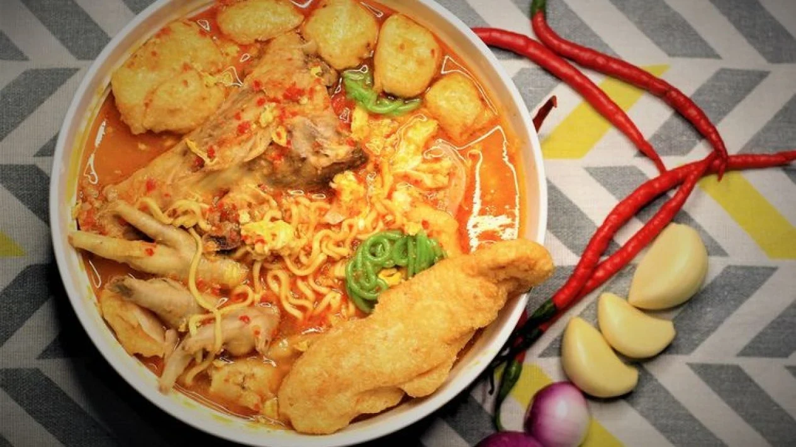

Seblak merupakan salah satu masakan khas Sunda, asalnya dari wilayah Parahyangan. Seblak memiliki cita rasa pedas dan gurih yang khas. Makanan ini identik dengan kuah, dan dibuat dari kerupuk serta bahan lainnya seperti bawang putih dan kencur.

Bahan-bahan:
1 bungkus mie rebus
1 mangkuk kecil kerupuk (rendam dalam air mendidih)
3 sdm makaroni (rebus)
1 butir telur ayam
2 buah sosis ayam
5 buah bakso sapi
1 ikat sayur pokcoy
7 buah cabai merah
9 buah cabai kering
7 buah cabai rawit
4 siung bawang putih
2 ruas kencur
1 sdt kaldu bubuk
Cara membuatnya:
Iris semua bahan sayur dan sosis.
Rebus mi sebentar. Angkat dan tiriskan.
Haluskan semua bahan cabai, bawang, dan kencur.
Tumis bumbu halus hingga harum.
Masukkan bakso, sosis, dan sayur ke dalam tumisan.
Tambahkan air ke tumisan.
Masukkan mi, makaroni, dan kerupuk. Tambahkan kaldu bubuk.
Masak hingga semua bahan matang dan bumbu meresap. Angkat dan sajikan.